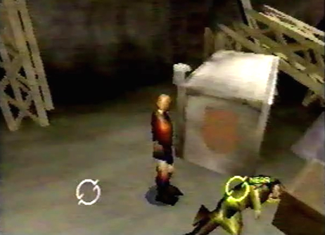

Enemies
Encountered/None |
|
Diary Entry 3: Excavation Site The Captain's Death After arriving at the Excavation Site, I quickly found the Captain. Unfortunately, he was badly wounded and had little time left. He was surprised that I had survived my great fall. Hell, I'm still surprised myself, it was nothing short of a miracle. He told me that Craymen's Black Fleet was heading north, along the Valley. The Captain, with great concern for my life, told me to leave as soon as possible. If I were to stay, the Empire could find me. He also mentioned that mysterious girl whom was taken away by Craymen. I wonder what the Captain meant when he said, " If they find you here, you're as good as dead, unless you recover that girl." I wonder what is so special about her? She must be very powerful to be able to stand up against the Empire. Just before the Captain's life faded, he gave me a map of the entire continent. This would surely come in handy for my pursuit against Craymen. Now, I was only left with feelings of anger, revenge, and emptiness. I had lost the person who raised me. I wish I had called him father before he died. I will stop at nothing to avenge the death of my friends as well as my Captain! Craymen will pay!!
|
|

| Divine
Overview |
 1. Seek out the injured Captain. |
2. The Captain tells Edge that Craymen's fleet is heading north, along the Valley. |
3. Edge receives a map of the entire Panzer Dragoon Saga Continent. |
4. The Captain's life fades and Edge cries out in despair. |